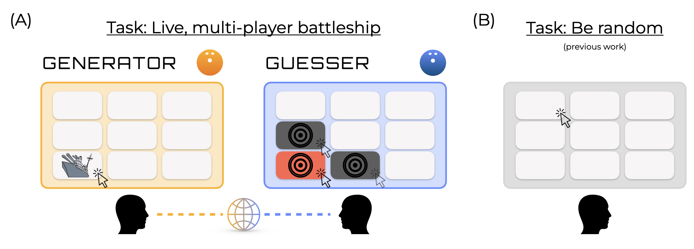

Near-random behavior in strategic games
This webpage contains stimuli and demonstrations supporting our paper:
Near-random behavior in strategic games
by Boger, Amir, and Yousif.

Below, you will find links to the experiments we performed.
- Experiment 1: Live Battleship game. The live game is available to play here. The game pairs you with an online opponent. To play against another person, all you need to do is send the link to someone and play against them! To get a feel for the game by playing 'against' yourself, just open the link twice in different browser windows.
- Experiment 2: Computerized generation game. This game, in which you generate locations against a computer opponent, is available here.
- Experiment 3: Guessing games. There were two variations of the guessing games. In one, participants guessed against previously generated sequences in the above generation task; in the other, participants guessed against non-strategic sequences from Boger et al. (2025). The first variant of the game is available here, and the second is available here.
- Experiment 4: Battleship with differing tile values. This game is like Experiment 1 (so play it against an opponent!) except that tiles differ in value here. This game contained 4 different grid arrangement conditions (i.e., determining how the tiles were arranged). To play against an opponent, be sure you open the same grid arrangement link as them. You can find the links here: condition 1, condition 2, condition 3, condition 4.
- Experiment 5: Battleship with differing tile values and asymmetric feedback. This game builds on Experiment 4; here only the generator knows about the location (and existence) of the tile values. As before, there are 4 different grid arrangement conditions. You can find the links here: condition 1, condition 2, condition 3, condition 4.
- Experiment 6: Battleship with shuffling tile values. This game builds on Experiment 5, making the guesser's job even harder. Here, the guesser doesn't know the location of the tile values; but unlike Experimetn 5, here the tile values shuffle every 15 turns. You can play the game here.
The OSF repository for this project is available here.